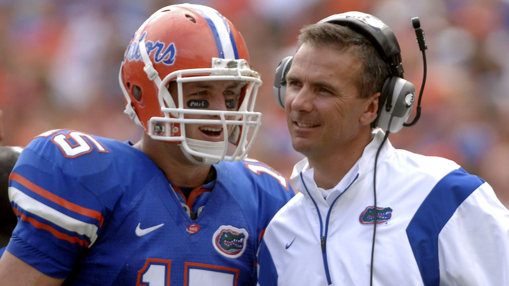

Tim Tebow's NFL Career To Date
Tim Tebow is my favorite football player of all time as well as being one of my favorite athletes period. Recently his former college coach at Florida, Urban Meyer, took over as head coach of the Jacksonville Jaguars. Around the time of the 2021 NFL Draft, word spread that Tebow had a workout with the Jaguars, but did so as a tight end and not a quarterback. The Jaguars took quarterback Trevor Lawrence with the #1 overall in the draft so he is in line to become their next starting QB. The Jaguars are yet to make a decision on if they will sign Tebow or not, so in the meantime I wanted to do an overview of Tebow's NFL career up to this moment.
| Team | Year | PassYds | TD | Int | RushYds | Avg | TD |
|---|---|---|---|---|---|---|---|
| Den | 2010 | 654 | 5 | 3 | 227 | 5.3 | 6 |
| Den | 2011 | 1,729 | 12 | 6 | 660 | 5.4 | 6 |
| NYJ | 2012 | 39 | 0 | 0 | 102 | 3.2 | 0 |